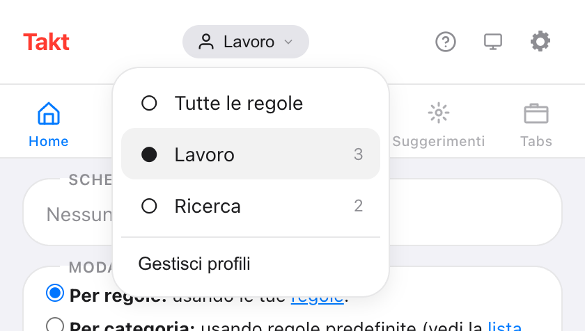
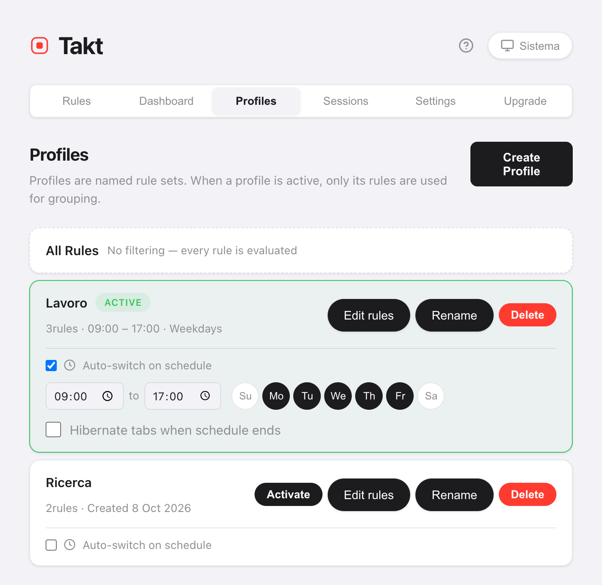

In breve: nella pagina delle opzioni di Takt, apri Profiles, crea "Lavoro" e "Personale" e assegna le regole a ciascuno. Cambia profilo dal menu dei profili del popup, oppure spunta Auto-switch on schedule e imposta orari e giorni.
- Quando un profilo è attivo, solo le sue regole raggruppano le schede.
- Le programmazioni seguono l'ora del giorno e il giorno della settimana, controllati una volta al minuto.
- Facoltativo: iberna le schede quando la programmazione finisce. Premium
Perché dovrei volere più di un set di regole per le schede?
Perché una regola che aiuta al lavoro è d'intralcio a casa. Un gruppo "Code" per GitHub è giusto alle 10:00. Alle 21:00 magari vuoi raggruppati YouTube e le ricette, e nessun gruppo di lavoro.
Senza profili hai due scelte: un lungo elenco di regole che cerca di coprire tutto, oppure attivare e disattivare le regole a mano. I profili permettono a ogni contesto di avere il suo elenco breve.
Come creo un profilo?
- Apri la pagina delle opzioni di Takt e vai su Profiles.
- Fai clic su Create Profile e dagli un nome.
- Copia al suo interno tutte le regole attuali (Clona le regole attuali), oppure parti da zero.
- Fai clic su Edit rules per spuntare le regole che usa questo profilo.
Una nuova regola creata mentre un profilo è attivo viene aggiunta automaticamente a quel profilo.
Come passo da un profilo all'altro?
Apri il popup e fai clic sul nome del profilo in alto. Il menu elenca Tutte le regole e ogni profilo, con il numero di regole. Scegline uno e si applica subito.

Tutte le regole disattiva i profili, quindi vengono valutate tutte le regole. Cambiare profilo non tocca i gruppi che hai già. Le nuove schede seguono le nuove regole; fai clic su Raggruppa schede nel popup per raggruppare di nuovo le altre.
Come cambio profilo automaticamente in base all'ora?
Nel riquadro di un profilo, spunta Auto-switch on schedule. Poi imposta:
- Ora di inizio e di fine. Il valore predefinito è dalle 09:00 alle 17:00.
- Giorni. Attiva o disattiva da Su (domenica) a Sa (sabato). Il valore predefinito è da lunedì a venerdì.
- Hibernate tabs when schedule ends (facoltativo).

Takt controlla la programmazione una volta al minuto. Quando inizia la fascia oraria, attiva il profilo. Quando finisce, torna a Tutte le regole.
Se due programmazioni si sovrappongono, vince il profilo creato per primo.
Cosa fa "Hibernate tabs when schedule ends"?
Alla fine della fascia oraria, Takt iberna le schede aperte. Salta la scheda attiva, le schede che riproducono audio, le schede fissate e qualsiasi URL nel tuo elenco delle schede da non sospendere mai.
Le schede di lavoro smettono di usare memoria quando finisce la giornata lavorativa e restano nell'elenco delle schede ibernate finché non le riattivi.
I profili e gli altri modi per separare lavoro e casa
| Profili di Chrome separati | Profili di Takt | |
|---|---|---|
| Cosa è separato | Tutto: finestre, cronologia, accessi | Solo le regole di raggruppamento |
| Stessa finestra e stesse schede | No | Sì |
| Cambio secondo una programmazione | No | Sì |
Se ti servono accessi e cronologia separati, usa profili di Chrome separati. I profili di Takt cambiano solo il modo in cui le schede vengono raggruppate dentro il browser che usi già.
Cosa i profili non fanno
- Non chiudono né aprono schede. Un profilo cambia quali regole si applicano. Per sostituire un intero set di schede, usa le sessioni.
- Durante la sua fascia oraria vince la programmazione. Se cambi profilo a mano durante le ore programmate, Takt torna indietro al controllo successivo, entro circa un minuto. Disattiva la programmazione per restare su un altro profilo.
- L'ora di fine deve essere dopo l'ora di inizio. Una fascia oraria che va oltre la mezzanotte richiede due profili.
Regole di lavoro al lavoro. Regole di casa a casa.
Aggiungi Takt a Chrome, è gratisDomande frequenti
Cosa succede alle regole che non sono nel profilo attivo?
Vengono ignorate finché non torni indietro. Seleziona Tutte le regole per usare di nuovo tutte le regole.
Cambiare profilo raggruppa di nuovo le schede aperte?
No. I gruppi esistenti restano. Le nuove schede seguono le nuove regole. Fai clic su Raggruppa schede nel popup per raggruppare di nuovo quelle aperte.
Ogni quanto Takt controlla la programmazione?
Una volta al minuto. Un profilo si attiva entro circa un minuto dall'ora di inizio e si disattiva entro circa un minuto dall'ora di fine.
I profili sono gratuiti?
No. Profili e programmazioni sono Premium, $3/mese o $30/anno. Il piano gratuito include 5 regole e il raggruppamento basato su regole.